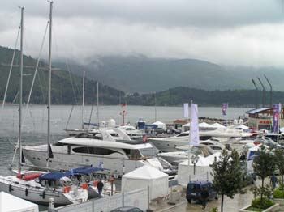

Jahte: Kupljene, izgubljene i naručene
Stigao je već maj, vreme je za najave razmišljanja na temu vode, mora, reka, a za maštovitije i ambicioznije i o jahtama, ili bar barkama, brodićima, jedrilicama, i ostalim plovilima. Ili, ništa od toga, već bar za dokono plutanje misli tokom kancelarijskog
i slično provedenog vremena.
"Pershing", "Azimut", "Galeon", "Ferretti", "Riva", "Princess", "Beneteau", "Searay", "Jeanneau", "Four Winns", "Regal", "Chaparral", "Campion", "Navar", "Quicksilver", "Karnic", "Mercury","Mercruiser" i "Kawasaki". Ovo su imena poznaih nautičkih brendova čije su jahte,
njih pedeset, bile izložene od kraja aprila do drugog maja u budvanskoj marini, na Budva Nautic Show.
Ova manifestacija je uvek prilika da se piše (uglavnom neinventivno) o bogatašima koji za
ogramne pare kupuju nove jahte. Prošle godine je jedan Rus pazario 'Tip' za 4,8 miliona evra, a ove godine najskuplji prodat brod koštao je tri miliona. Zapravo, dve najskuplje jahte kupili su biznismeni iz Srbije.
U isto vreme, objavljeno je da se prodaje Titova jahta 'Primorka', jer je njeno održavanje
preskupo (dvesta hiljada evra godišnje). Njena početna cena je 180 hiljada evra, pa bi je neki od već pominjanih srpskih biznismena mogao kupiti za kusura od prethodne nabavke. Što se tiče druga dva broda iz Titove flote, crnogorska vlada je već prodala 'Galeb', dok prodaja 'Jadranke'
za sada nije planirana, piše Blic.
***
Nevezano za temu jahti, ali se odnosi na Crnu Goru je i vest koju prenosi današnje izdanje
Blica, na temu kumovskih odnosa i državnog razvoja: "Nemački ambasador u Podgorici Tomas Šmit ocenio je juče da su tradicionalni odnosi i uticaj kumovskih i plemenskih veza na državne odluke u Crnoj Gori glavna prepreka njenom razvoju i bržem uključivanju u EU. „Državni sistem postoji i funkcioniše u Crnoj Gori, ali se taj vidljivi sistem ne uzima zdravo za gotovo od strane društva, jer postoji uticajniji paralalelni skriveni sistem zasnovan na tradicionalnim vrednostima koji neretko dominantno utiče na državu“, rekao je Šmit."
***
Da se vratim na brodove.
U poslednjih par nedelja pažnju je privkla i informacija o misteriji jedne australijske jahte. Dvanaest metara dug brod primećen je kako pluta 160 kilometara od austrlijskog grada Taunzvil. Kad su spasioci stigli do broda, zatekli su motore i elektronsku opremu kako rade, na stolu su našli hranu, ali nije bilo ljudi.
Novine su još u poslednje vreme pisale o jahti koju su za 137 miliona dolara naručili Bred Pit i Anđelina Džoli. Brod će tek da se pravi, a na pučinu će se otisnuti 2009. godine.
Komentari
 Ljube | 04.05.07 16:29
Ljube | 04.05.07 16:29
 ubipacijentic | 04.05.07 18:34
ubipacijentic | 04.05.07 18:34
kiko | 05.05.07 13:59
Ovaj tekst je poslednje relevantno objavljeno sto sam uspeo da pronadjem, mada samo dalje produbljuje misteriju
Ljube | 06.05.07 08:52
 RSS feed
RSS feed
 sadržaji se objavljuju pod
sadržaji se objavljuju pod
Komentari
Zbog tehničkih problema komentari stigli do početka jula 2007. su sada u okviru teksta
Yahti | 01.08.07 21:29